©izwe.inc
Favourite anime characters
Itachi
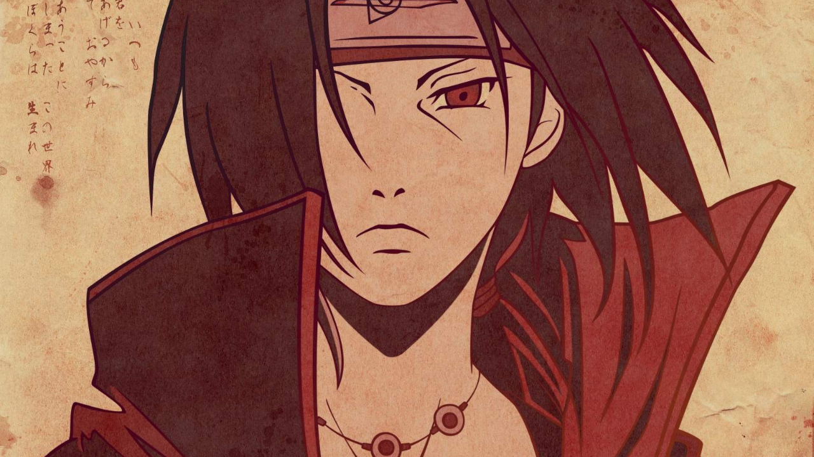
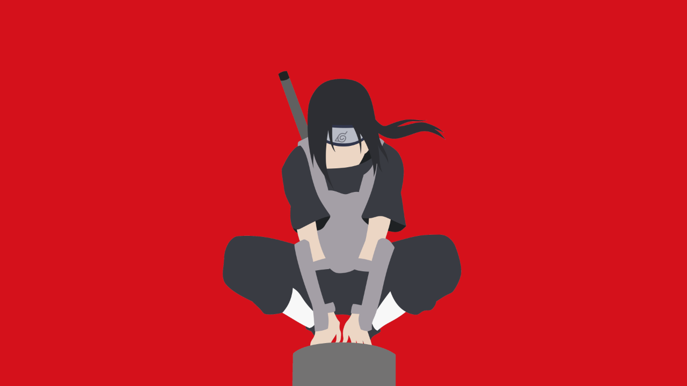
Series: Naruto |
The most misuderstood character of all time.
Escanor
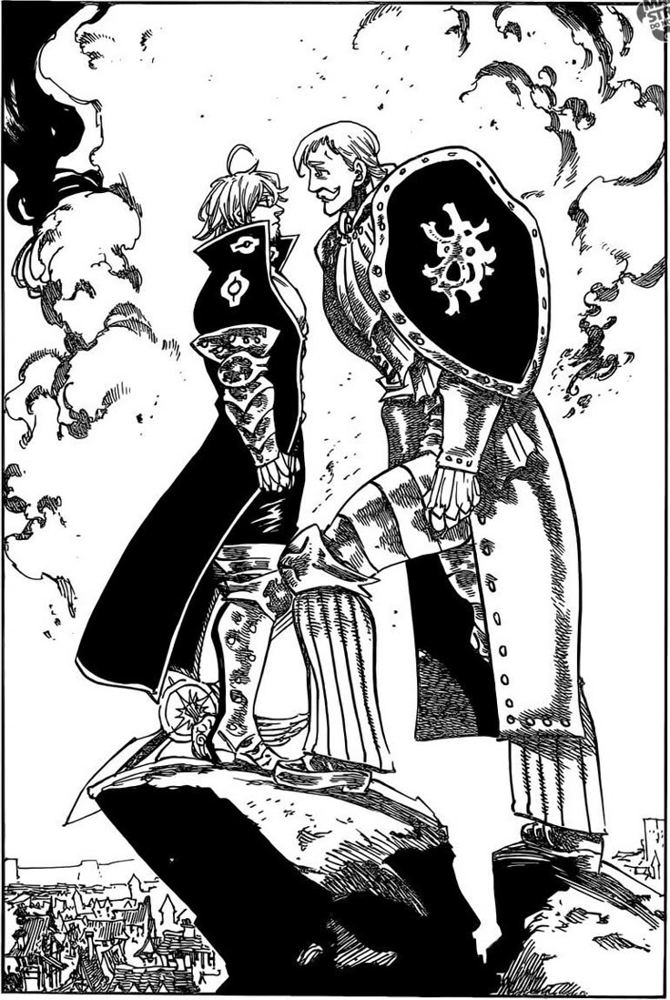
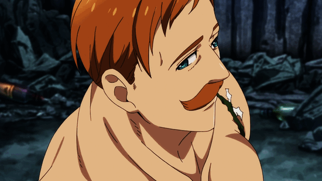
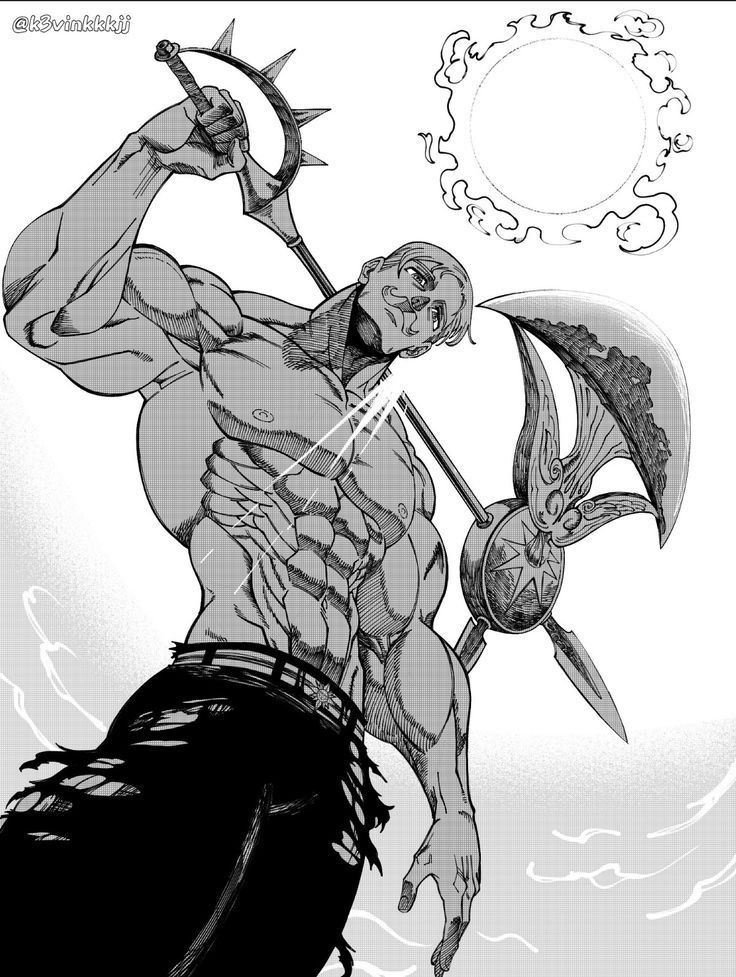
Series: Escanor and the six deadly sins |
side character who outshined the protaganist by pride and might.
Griffith
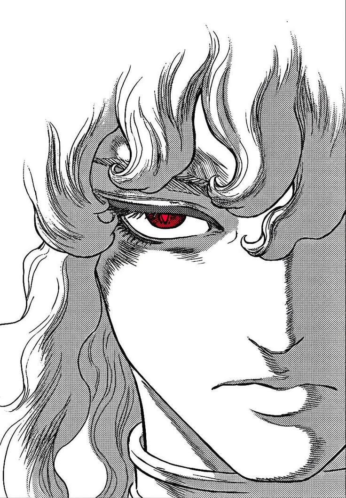
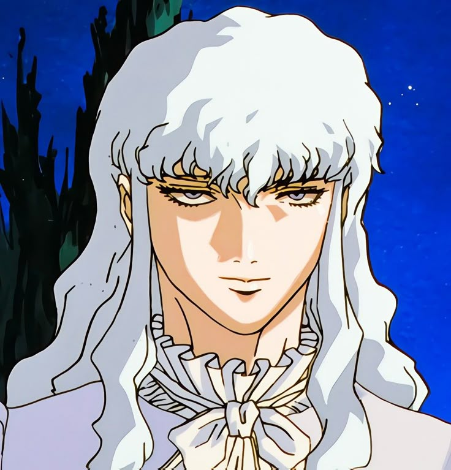
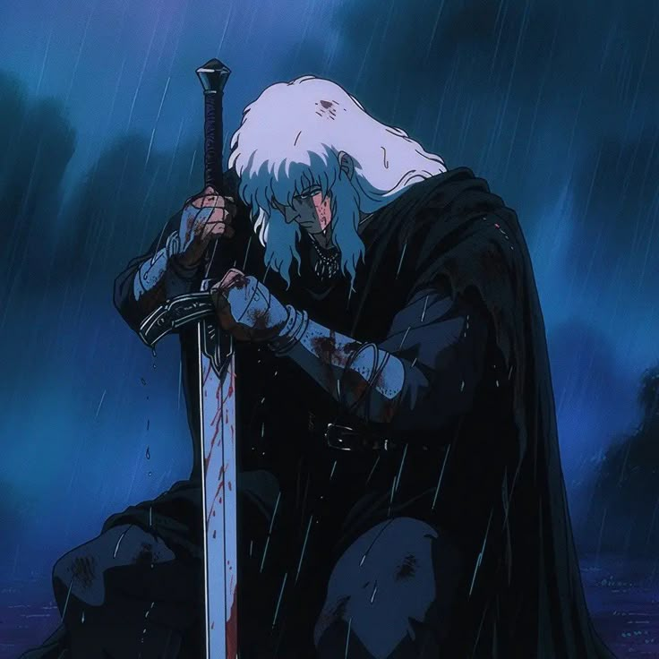
Series: Berserk |
unbothered by betrayal, a character willing to do anything to ensure his dream comes to reality.
Guts
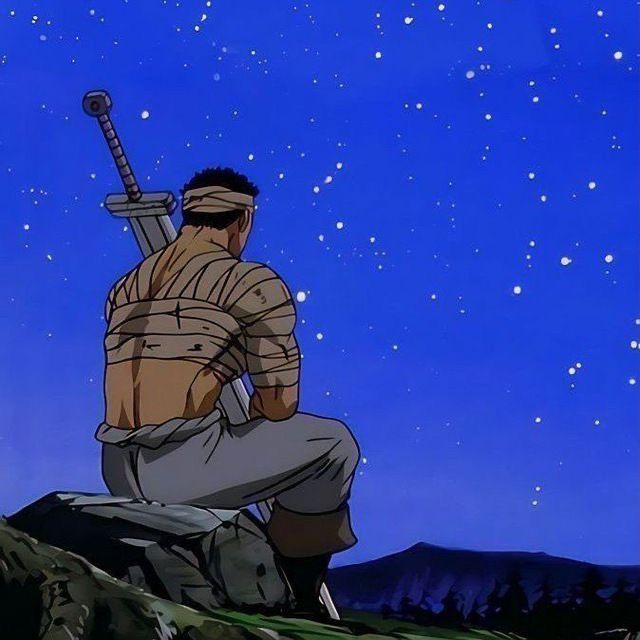
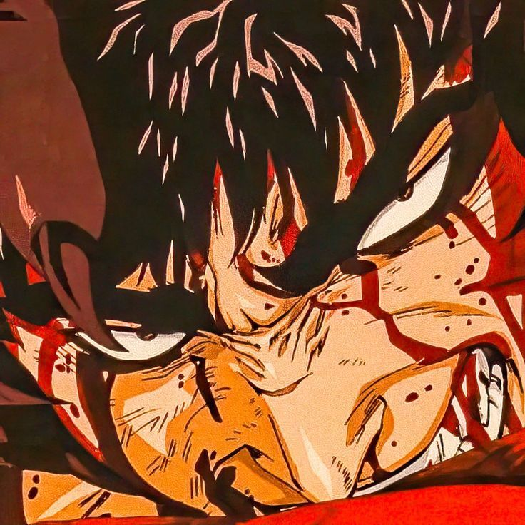
went through the most painful life experiences ever imaginable but for some reason, chooses to live and fight.
Thorfinn
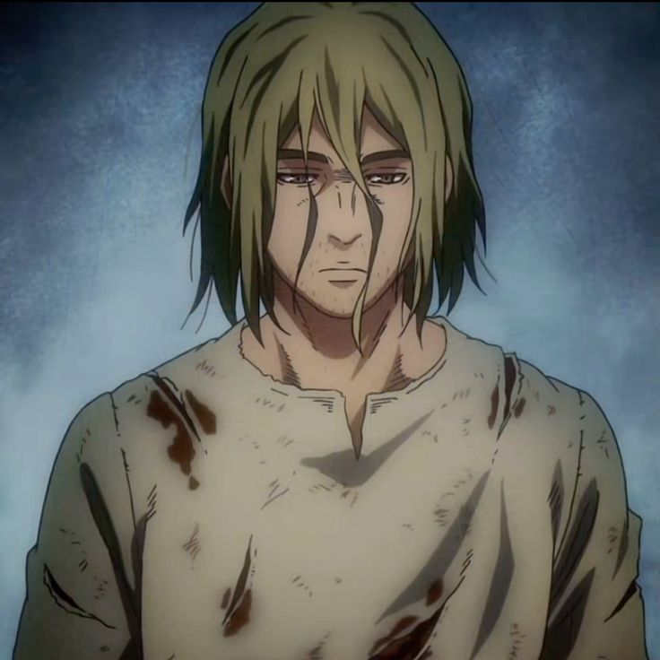
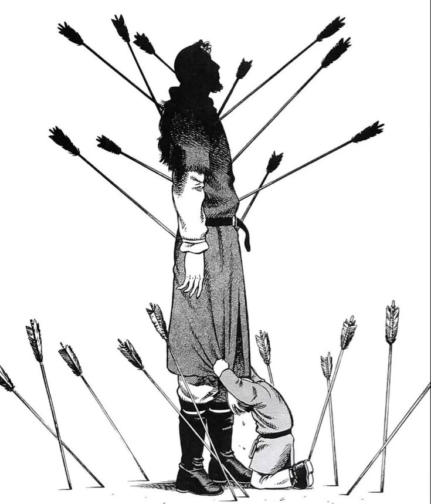
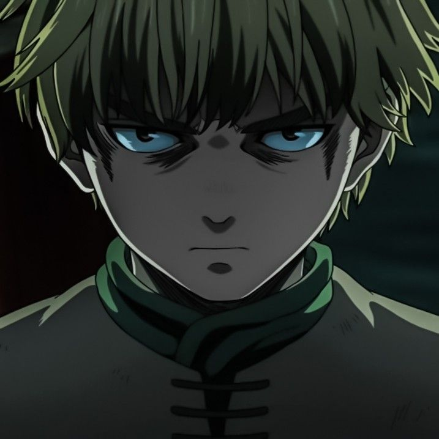
Series: Vinland Saga |
raised to know only hatred and vengance as a child, but later tries to find the meaning of peace and changes his heart and way of life.
Frieren
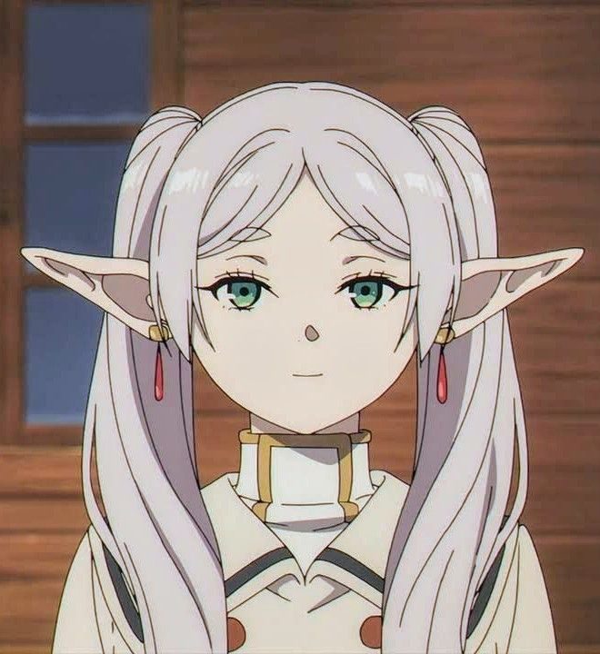
Series: Frieren |
she's just the goat.